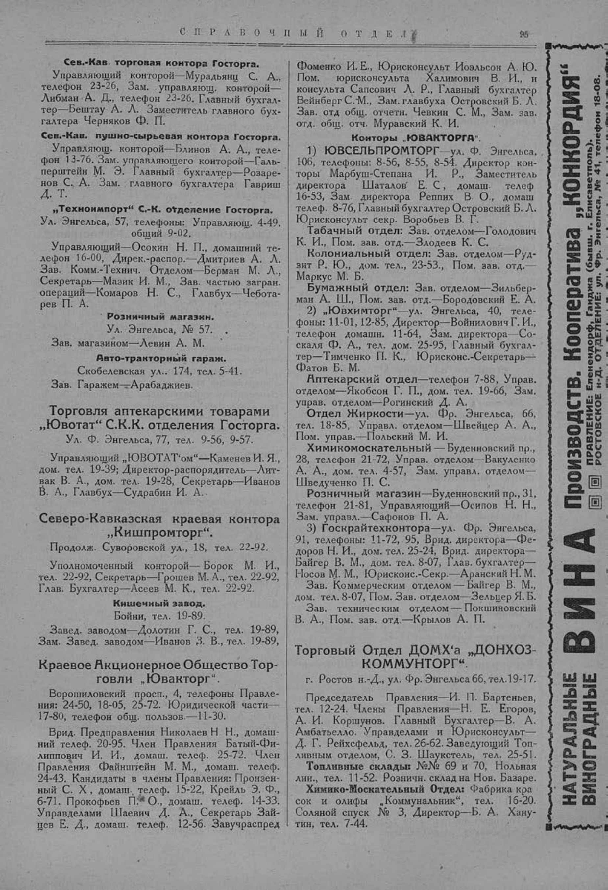

Лист источника 145
Скан

Распознанный текст
СПРАВОЧНЫЙ ОТДЕЛ 95
Сев.-Кав. торговая контора Госторга.
Управляющий конторой—Мурадьянц С. А.,
телефон 23-26, Зам. управляющ. конторой—
Либман А. Д., телефон 23-26, Главный бухгал-
тер—Бештау А. Л. Заместитель главного бух-
галтера Черняков Ф. П.
Сев.-Кав. пушно-сырьевая контора Госторга.
Управляющ. конторой—Блинов А. А., теле-
фон 13-76. Зам. управляющего конторой—Галь-
перштейн М. Э. Главный бухгалтер—Розаре-
нов С. А. Зам. главного бухгалтера Гавриш
Д. Т.
„Техноимпорт“ С.-К. отделение Госторга.
Ул. Энгельса, 57, телефоны: Управляющ. 4-49.
общий 9-02.
Управляющий—Осокин Н. П., домашний те-
лефон 16-00, Дирек.-распор.—Дмитриев А. Л.
Зав. Комм.-Технич. Отделом—Берман М. Л.,
Секретарь—Мазик И. М., Зав. частью загран.
операций—Комаров Н. С., Главбух—Чебота-
рев П. А.
Розничный магазин.
Ул. Энгельса, № 57.
Зав. магазином—Левин А. М.
Авто-тракторный гараж.
Скобелевская ул., 174, тел. 5-41.
Зав. Гаражем—Арабаджиев.
Торговля аптекарскими товарами
„Ювотат“ С.К.К. отделения Госторга.
Ул. Ф. Энгельса, 77, тел. 9-56, 9-57.
Управляющий „ЮВОТАТ‘ом“—Каменев И. Я.,
дом. тел. 19-39; Директор-распорядитель—Лит-
вак В. А., дом. тел. 19-28, Секретарь—Иванов
В. А., Главбух—Судрабин И. А.
Северо-Кавказская краевая контора
„Кишпромторг“.
Продолж. Суворовской ул., 18, тел. 22-92.
Уполномоченный конторой — Борок М. И.,
тел. 22-92, Секретарь—Грошев М. А., тел. 22-92,
Глав. Бухгалтер—Асеев М. К., тел. 22-92.
Кишечный завод.
Бойни, тел. 19-89.
Завед. заводом—Долотин Г. С., тел. 19-89,
Зам. Завед. заводом—Иванов З. В., тел. 19-89,
Краевое Акционерное Общество Тор-
говли „Ювакторг“.
Ворошиловский просп., 4, телефоны Правле-
ния: 24-50, 18-05, 25-72. Юридической части—
17-80, телефон общ. пользов.—11-30.
Врид. Предправления Николаев Н Н., домаш-
ний телеф. 20-95. Член Правления Батый-Фи-
липпович И. И., домаш. телеф. 25-72. Член
Правления Файнштейн М. М., домаш. телеф.
24-43. Кандидаты в члены Правления: Пронзен-
ный С. Х, домаш. телеф. 15-22, Крейль Э. Ф.,
6-71. Прокофьев П. О., домаш. телеф. 14-33.
Управделами Шаевич Д. А., Секретарь Зай-
цев Е. Д., домаш. телеф. 12-56. Завучраспред
Фоменко И. Е., Юрисконсульт Иоэльсон А. Ю.
Пом. юрисконсульта Халимович В. И., и
консульта Сапсович Л. Р., Главный бухгалтер
Вейнберг С. М., Зам. главбуха Островский Б. Л.
Зав. отд общ. отчетн. Чевкин С. М., Зам. зав.
отд. общ. отч. Муравский К. И.
Конторы „ЮВАКТОРГА“.
1) ЮВСЕЛЬПРОМТОРГ—ул. Ф. Энгельса,
106, телефоны: 8-56, 8-55, 8-54. Директор кон-
торы Марбуш-Степана И. Р., Заместитель
директора Шаталов Е. С, домаш. телеф
16-53, Зам директора Реппих В. О., домаш
телеф. 8-76, Главный бухгалтер Островский Б. Л.
Юрисконсульт секр. Воробьев В. Г.
Табачный отдел: Зав. отделом—Голодович
К. И., Пом. зав. отд.—Злодеев К. С.
Колониальный отдел: Зав. отделом—Руд-
зит Р. Ю., дом. тел., 23-53., Пом. зав. отд.—
Маркус М. Б.
Бумажный отдел: Зав. отделом—Зильбер-
ман А. Ш., Пом. зав. отд.—Бородовский Е. А.
2) „Ювхимторг“—ул. Энгельса, 40, теле-
фоны: 11-01, 12-85, Директор—Войнилович Г. И.,
телефон домашн. 11-64, Зам. директора—Со-
скаля Ф. А., тел. дом. 25-95, Главный бухгал-
тер—Тимченко П. К., Юрисконс.-Секретарь—
Фатов Б. М.
Аптекарский отдел—телефон 7-88, Управ.
отделом—Якобсон Г. П., дом. тел. 19-66, Зам.
управ. отделом—Рогинский Д. А.
Отдел Жиркости—ул. Фр. Энгельса, 66,
тел. 18-85, Управл. отделом—Швейцер А. А.,
Пом. управ.—Польский М. И.
Химикомоскательный — Буденновский пр.,
28, телефон 21-72, Управ. отделом—Вакуленко
А. А., дом. тел. 4-57, Зам. управл. отделом—
Шведученко П. С.
Розничный магазин—Буденновский пр., 31,
телефон 21-81, Управляющий—Осипов Н. Н.,
Зам. управл.—Сафонов П. А.
3) Госкрайтехконтора—ул. Фр. Энгельса,
91, телефоны: 11-72, 95, Врид. директора—Фе-
доров Н. И., дом. тел. 25-24, Врид. директора—
Байгер В. М., дом. тел. 8-07, Глав. бухгалтер—
Носов М. М., Юрисконс.-Секр.—Аранский Н. М.
Зав. Коммерческим отделом — Байгер В. М.,
дом. тел. 8-07, Пом. Зав. отделом—Зельцер Я. Б.
Зав. техническим отделом — Покшиновский
В. А., Пом. зав. отд.—Крылов А. П.
Торговый Отдел ДОМХ'а „ДОНХОЗ-
КОММУНТОРГ“.
г. Ростов н.-Д., ул. Фр. Энгельса 66, тел. 19-17.
Председатель Правления—И. П. Бартеньев,
тел. 12-24. Члены Правления—Н. Е. Егоров,
А. И. Коршунов. Главный Бухгалтер—В. А.
Амбатьелло. Управделами и Юрисконсульт—
Д. Г. Рейхсфельд, тел. 26-62. Заведующий Топ-
ливным отделом, С. З. Шаукстель, тел. 25-51.
Топливные склады: №№ 69 и 70, Нольная
лин., тел. 11-52. Розничн. склад на Нов. Базаре.
Химико-Москательный Отдел: Фабрика кра
сок и олифы „Коммунальник“, тел. 16-20.
Соляной спуск № 3, Директор—Б. А. Хану-
тин, тел. 7-44.
НАТУРАЛЬНЫЕ ВИНОГРАДНЫЕ ВИНА Производств. Кооператива „КОНКОРДИЯ“
ПРАВЛЕНИЕ: Еленендорф, Ганджа (бывш. г. Елисаветполь).
РОСТОВСКОЕ н-Д. ОТДЕЛЕНИЕ: ул. Фр. Энгельса, № 41, телефон 18-08.